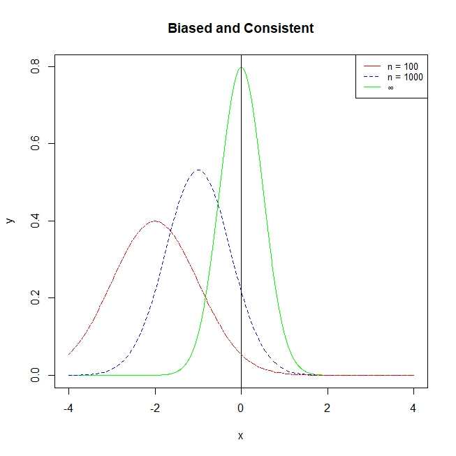

This background chapter introduces some key theory regarding the ordinary least squares estimator, that will inform the conditions and assumptions we will need to make in order to achieve unbiased causal estimation.
Ordinary Least Squares Estimator
Deriving the Estimator
Let us define our estimation vector \boldsymbol{\hat{\beta}} as the value of \boldsymbol{\hat{\beta}} that minimises the sum of squared errors:
\boldsymbol{\hat{\beta}} = \min\limits_{b} (\mathbf y - \mathbf{Xb})^T (\mathbf y - \mathbf{Xb}) = \min\limits_b S(\mathbf b)
We can expand S(\mathbf b) as follows:
\begin{split} S(\mathbf b) & = \mathbf y^T \mathbf y \color{red}{ - \mathbf b^T \mathbf X^T \mathbf y - \mathbf y^T \mathbf{Xb}} \color{black} + \mathbf b^T \mathbf X^T \mathbf{Xb} \\ & = \mathbf y^T \mathbf y \color{red}{- 2\mathbf b^T \mathbf X^T \mathbf y} \color{black} + \mathbf b^T \mathbf X^T \mathbf{Xb} \end{split}
Taking the partial derivative in respect to b:
\frac{\partial S(\mathbf b)}{\partial \mathbf b} = \begin{pmatrix}\frac{\partial S(\mathbf b)}{\partial b_1} \\\vdots \\\frac{\partial S(\mathbf b)}{\partial b_k}\end{pmatrix}
Differentiating with the vector b yields:
\frac{\partial S(\mathbf b)}{\partial b} = -2\mathbf X^T \mathbf y + 2 \mathbf X^T \mathbf{Xb}
Evaluated at \hat{\beta}, the derivatives should equal zero (since first order condition of finding minimums):
\frac{\partial S(\mathbf b)}{\partial b} \biggr|_{\hat{\beta}} = -2\mathbf X^T \mathbf y + 2\mathbf X^T \mathbf X \boldsymbol{\hat{\beta}} = 0
When assuming \mathbf X^T \mathbf X is invertable (which is true if \mathbf X is full rank), we can isolate \hat{\beta} to find the solution to OLS:
\begin{split} -2\mathbf X^T\mathbf y + 2 \mathbf X^T \mathbf X \boldsymbol{\hat{\beta}} & = 0 \\ 2 \mathbf X^T \mathbf X \boldsymbol{\hat\beta} & = 2\mathbf X^T \mathbf y \\ \boldsymbol{\hat\beta} & = (2\mathbf X^T \mathbf X)^{-1} 2 \mathbf X^T \mathbf y \\ \boldsymbol{\hat\beta} & = (\mathbf X^T \mathbf X)^{-1} \mathbf X^T \mathbf y \end{split}
Regression Anatomy Theorem
Take our standard multiple linear regression:
y_i = \beta_0 + \beta_1 x_{1i} + \beta_2 x_{2i} + ... + \beta_k x_{ki} + u_i
Let us say we are interested in x_1 (this can be generalised to any x_j). Let us make x_1 the outcome variable of a regression with explanatory variables x_2, ..., x_k:
x_{1i} = \gamma_0 + \gamma_1 x_{2i} + ... + \gamma_{k-1}x_{ki} + \widetilde{r_{1i}}
- The error term is \widetilde{r_{1i}}, which represents the part of x_{1i} that are uncorrelated to x_2, ..., x_k. In other words, \widetilde{r_{1i}} is the part of x_1 that cannot be explained by any other explanatory variable x_2, ..., x_k. (uncorrelated with them)
Now, take the regression of with outcome variable y, with all explanatory variables except x_1:
y_i = \delta_0 + \delta_1 x_{2i} + ... + \delta_{k-1} x_{ki} + \widetilde{y_i}
- The error term is \widetilde{y_i}, which is the part of y_i that cannot be explained by x_2, ..., x_k (uncorrelated with them). Since \widetilde{y_i} is not explained by x_2, ..., x_k, variable x_1 must be the one explaining \widetilde{y_i}.
- But, it is not the whole of x_1 explaining \tilde{y_i}. This is since x_1 may also correlated with x_2, ..., x_k, and the correlated parts of x_1 with x_2, ..., x_k are already picked up in the regression by the coefficients of x_2, ..., x_k.
- Thus, \widetilde{y_i} must be explained by the part of x_1 that is uncorrelated and not explained by x_2, ..., x_k, which we derived earlier as \widetilde{r_{1i}}.
Thus, we can create another regression with explanatory variable \widetilde{x_{1i}} and outcome variable \widetilde{y_i}.
\widetilde{y_i} = \alpha_0 + \alpha_1 \widetilde{r_{1i}} + u_i
We can plug \widetilde{y_i} back into our regression of y_i with explanatory variables x_2 ..., x_k, and re-arrange:
\begin{split} y_i & = \delta_0 + \delta_1 x_{2i} + ... + \delta_{k-1} x_{ki} + \widetilde{y_i} \\ y_i & = \delta_0 + \delta_1 x_{2i} + ... + \delta_{k-1} x_{ki} + \underbrace{\alpha_0 + \alpha_1 \widetilde{r_{1i}} + u_i}_{\because \text{ plug in } \widetilde{y_i}} \\ y_i & = \underbrace{(\delta_0 + \alpha_0)}_{\beta_0} + \underbrace{\alpha_1 \widetilde{r_{1i}}}_{\beta_1 x_{1i}} + \underbrace{\delta_1x_{2i}}_{\beta_2 x_{2i}} + ... + \underbrace{\delta_{k-1} x_{ki}}_{\beta_kx_{ki}} + \underbrace{u_i}_{u_i} \end{split}
As we can see, this new regression mirrors the original standard multiple linear regression: Importantly we know the \beta_1 x_{1i} in the original is analogous to \alpha_1 \widetilde{r_{1i}}. Thus, the estimate of \alpha_1 will be the same as \beta_1 in the original regression.
The coefficient \alpha_1 (which is equal to \beta_1) explains the expected change in y, given an increase in the part of x_1 uncorrelated with x_2, ..., x_k. So essentially, we have partialed out the effect of the other explanatory variables, and only focus on the effect on y of the uncorrelated part of x_1 (which is \widetilde{r_{1i}})
OLS as an Unbiased Estimator
Unbiased Estimators
An estimator is unbiased, if its estimates \hat\theta_n are of the following:
E(\hat\theta_n) = \theta
Or in other words, if we repeatedly sample and use the estimator, on average, the estimates will be equal to the true population value.
We want an estimator that is unbiased. Why?
- We know that the expectation of a random variable is its “best guess” of its value.
- We know that estimates \hat\theta_n from an estimator are a random variable called the sampling distribution.
- Thus, if E(\hat\theta_n) = \theta, that means our “best guess” of the estimator value is the true parameter value \theta. That means any one estimate \hat\theta_n is on average, correct.
Conditions for Unbiasedness
OLS is an unbiased estimator of the relationship between any x_j and y under 4 conditions:
- Linearity in parameters: the model of the population (data generating process) can be modelled as:
\mathbf y = \mathbf X \boldsymbol\beta + \mathbf u
- Random Sampling: the observations in our sample are randomly sampled from the same population.
- No Perfect Multicolinearity: There is no exact linear relationships between the regressors. This ensures that \mathbf X^T \mathbf X is invertible, which is required for the derivation of OLS.
- Zero Conditional Mean: E(u|\mathbf X) = 0. This implies that no regressor, and no function of multiple regressors is correlated with the error term.
If any of these conditions are violated, OLS is not an unbiased estimator.
Proof of Unbiasedness
We need condition 3 to ensure \mathbf X^T \mathbf X is invertible, in order to have OLS estimates. Once we have OLS estimates (derivation above), we can manipulate it as following:
\begin{split} \boldsymbol{\hat\beta} & = (\mathbf X^T \mathbf X)^{-1} \mathbf X^T \mathbf y \\ & = (\mathbf X^T \mathbf X)^{-1} \mathbf X^T\underbrace{(\mathbf X \boldsymbol\beta + \mathbf u)}_{\text{plug in } \mathbf y} \\ & = \underbrace{(\mathbf X^T \mathbf X)^{-1} \mathbf X^T \mathbf X}_{\text{inverses cancel out }} \boldsymbol\beta + (\mathbf X^T \mathbf X)^{-1} \mathbf X^T \mathbf u \\ & = \boldsymbol\beta + (\mathbf X^T \mathbf X)^{-1} \mathbf X^T \mathbf u \\ \end{split}
Now, let us take the expectation of \boldsymbol{\hat\beta} conditional on \mathbf X. Remember condition 4 - zero conditional mean, which allows us to simplify this.
\begin{split} E(\boldsymbol{\hat\beta}|\mathbf X) & = \boldsymbol\beta + (\mathbf X^T \mathbf X)^{-1} \underbrace{E(\mathbf u | \mathbf X)}_{= \ 0} \\ E(\boldsymbol{\hat\beta}|\mathbf X) & = \boldsymbol\beta \end{split}
Now, we can use the law of iterated expectations to conclude this proof:
\begin{split} E(\boldsymbol{\hat\beta}) & = E(E(\boldsymbol{\hat\beta}|\mathbf X)) \\ & = E(\boldsymbol\beta) \\ & = \boldsymbol\beta \end{split}
The law of iterated expectations states that:
E(X) = E(E(X|Y))
Thus, OLS is unbiased under the 4 conditions above.
OLS as a Consistent Estimator
Asymptotically Consistent Estimators
Asymptotic properties are properties of estimators as the sample size becomes larger and larger. Or more mathematically, as the sample size n approaches infinity.
An estimator is consistent, if as we increase sample size towards infinity, the estimate will become more and more concentrated around the true population value \theta.
Or in other words, as sample size increases indefinitely, we will get closer and closer to the true population value \theta, until at infinite sample size, all our estimates will be exactly \theta. Mathematically:
Pr(|\hat\theta_n - \theta|> \epsilon) \rightarrow 0, \text { as } n \rightarrow ∞
- Or in other words, the proabability that the distance between an estimate \hat\theta_n and the true population value \theta will be higher than a small close-to-zero value \epsilon will be 0, since our estimates \hat\theta_n will converge at the \theta.
An estimator can be both biased, but consistent.
- i.e. in smaller sample sizes, the estimator might not be on average correct, but over a large enough sample size, it will become “unbiased”.
For example, in the figure below, we can see that this estimator is biased at small values of n, but as n increases, it becomes more consistent, collapsing its distribution around the true \theta.

The law of large numbers states that the sample average of a random sample, is a consistent estimator of the population mean.
For example, let us say we have a random variable x. We take a random sample of n units, so our sample is (x_1, \dots, x_n).
- Let us define \bar x_n as our sample average.
- Let us define \mu as the true population mean of variable x.
The law of large numbers states that:
\text{plim}( \bar x_n) = \mu
- Where \text{plim} states that as n approaches infinity, the probability distribution of \bar x_n collapses around \mu.
Why is this the case? This sample mean estimator is calculated simply through the formula for mean:
\bar x_n = \frac{1}{n}\sum\limits_{i=1}^n x_i
Let us define the variance of our sample of x_1, \dots, x_n as Var(x_i) = \sigma^2. We can now find the variance of our sampling distribution of estimator \bar x_n:
\begin{split} Var(\bar x_n) & = Var\left( \frac{1}{n}\sum\limits_{i=1}^n x_i \right) \\ & = \frac{1}{n^2} Var \left(\sum\limits_{i=1}^n x_i\right) \\ & = \frac{1}{n^2} \sum\limits_{i=1}^n Var(x_i) \\ & = \frac{1}{n^2} \sigma^2 \\ & = \frac{\sigma^2}{n} \end{split}
And as sample size n increases to infinity, we get:
\lim\limits_{n \rightarrow ∞} Var(\bar x_n) = \lim\limits_{n \rightarrow ∞} \frac{\sigma^2}{n} = 0
Thus, the variance of our estimator \bar x_n shrinks to zero, so as sample size increases to infinity n, the sampling distribution of estimator \bar x_n collapses around the true population mean.
Conditions for Asymptotic Consistency
OLS is an asymptotically consistent estimator of the relationship between any x_j and y under 4 conditions. These conditions are identical to the unbiasedness conditions EXCEPT condition 4, which is weakened from the original unbiasedness condition.
- Linearity in parameters: the model of the population (data generating process) can be modelled as:
\mathbf y = \mathbf X \boldsymbol\beta + \mathbf u
- Random Sampling: the observations in our sample are randomly sampled from the same population.
- No Perfect Multicolinearity: There is no exact linear relationships between the regressors. This ensures that \mathbf X^T \mathbf X is invertible, which is required for the derivation of OLS.
- Zero Mean and Exogeneity: E(u_i) = 0, and Cov(x_i, u_i) = 0. This means that no regressor should be correlated with the error term. This also implies E(x_iu_i) = 0.
If any of these conditions are violated, OLS is not a consistent estimator.
Note - even if all these conditions are met, OLS is not unbiased, just consistent. For OLS to be unbiased, it must meet the full Zero Conditional Mean assumption as discussed previously.
Proof of Asymptotic Consistency
We need condition 3 to ensure \mathbf X^T \mathbf X is invertible, in order to have OLS estimates. Once we have OLS estimates (derivation above), we can manipulate it as following:
\begin{split} \boldsymbol{\hat\beta} & = (\mathbf X^T \mathbf X)^{-1} \mathbf X^T \mathbf y \\ & = (\mathbf X^T \mathbf X)^{-1} \mathbf X^T\underbrace{(\mathbf X \boldsymbol\beta + \mathbf u)}_{\text{plug in } \mathbf y} \\ & = \underbrace{(\mathbf X^T \mathbf X)^{-1} \mathbf X^T \mathbf X}_{\because \text{ inverses cancel}} \boldsymbol\beta + (\mathbf X^T \mathbf X)^{-1} \mathbf X^T \mathbf u \\ & = \boldsymbol\beta + (\mathbf X^T \mathbf X)^{-1} \mathbf X^T \mathbf u \\ \end{split}
We cannot apply the law of large numbers to sums. Thus, we can convert our matrices into vector notation.
The following statements are true:
\begin{split} & \mathbf X^T \mathbf X = \sum\limits_{i=1}^n \mathbf x_i \mathbf x_i^T \\ & \mathbf X^T \mathbf u = \sum\limits_{i=1}^n \mathbf x_i \mathbf u_i \end{split}
Thus, we can simplify the above to:
\begin{split} \boldsymbol{\hat\beta} & = \boldsymbol\beta + \left( \sum\limits_{i=1}^n \mathbf x_i \mathbf x_i^T\right)^{-1} \left( \sum\limits_{i=1}^n \mathbf x_i \mathbf u \right) \\ & = \boldsymbol\beta + \underbrace{\left( \frac{1}{n}\sum\limits_{i=1}^n \mathbf x_i \mathbf x_i^T\right)^{-1} \left( \frac{1}{n}\sum\limits_{i=1}^n \mathbf x_i \mathbf u \right)}_{\because \ \left(\frac{1}{n} \right)^{-1} \text{and } \frac{1}{n} \text{ cancel out}} \end{split}
Now, let us apply the probability limit:
\text{plim} \boldsymbol{\hat\beta} = \boldsymbol\beta + \left( \text{plim} \frac{1}{n}\sum\limits_{i=1}^n \mathbf x_i \mathbf x_i^T\right)^{-1} \left( \text{plim} \frac{1}{n}\sum\limits_{i=1}^n \mathbf x_i \mathbf u \right)
And using the law of large numbers (see above), and the zero-mean and exogeneity condition, we can simplify to:
\begin{split} \text{plim} \boldsymbol{\hat\beta} & = \boldsymbol\beta + (E(\mathbf x_i \mathbf x_i^T))^{-1}\underbrace{E(\mathbf x_i \mathbf u_i)}_{ = \ 0} \\ \text{plim} \boldsymbol{\hat\beta} & = \boldsymbol\beta \end{split}
Thus, OLS is asymptotically consistent under the 4 conditions above.
Further Properties of OLS
OLS as a Conditional Expectation Function
OLS is a best-linear approximation of the conditional expectation function.
A conditional expectation function (CEF) says that the value of E(y) depends on the value of x. We notate a conditional expectation function as E(y|x). As we noted earlier, the linear regression model can be a conditional expectation function of E(y|x).
A best linear approximation of a conditional expectation function can take the following form:
E(y_i|x_i) = b_0 + b_1x_i
With parameters b_0, b_1 that minimise the mean squared errors (MSE).
\begin{split} MSE & = E(y_i - E(y_i|x_i))^2 \\ & = \frac{1}{n}\sum\limits_{i=1}^n( y_i - E(y_i|x_i))^2 \end{split}
Suppose we have the conditional expectation function:
E(y_i|x_i) = b_0 + b_1x_i
We also know that our typical regression equation is:
y_i = \beta_0 + \beta_1 x_i + u_i
We know that E(u_i|x_i) = 0. Let us define u_i as the following:
u_i = y_i - E(y_i|x_i)
If the above defined u_i is true, E(u_i|x_i) should also be equal to 0. So, let us plug in the above u_i into E(u_i | x_i).
\begin{split} E(u_i|x_i) & = E(y_i - E(y_i|x_i) \ | \ x_i) \\ & = E(y_i|x_i) - E(y_i|x_i) \\ & = 0 \end{split}
Thus, we know u_i = y_i - E(y_i|x_i) to be true. Thus, rearranging, we know:
y_i = E(y_i|x_i) + u_i
We also know that y_i = \beta_0 + \beta_1 x_i + u_i. Thus, the following is true:
\begin{split} E(y_i|x_i) + u_i & = \beta_0 + \beta_1 + u_i \\ b_0 + b_1 + u_i & = \beta_0 + \beta_1 + u_i \\ b_0 + b_1 & = \beta_0 + \beta_1 \end{split}
Well, you might point out, it is still possible that b_1 ≠ \beta_1 in this scenario. We can go further. We know that the conditional expectation function minimises the mean of squared errors.
\begin{split} MSE & = \min\limits_{b_0, b_1} E(y_i - E(y_i|x_i))^2 \\ & = \min\limits_{b_0, b_1} E(y_i - \beta_0 - \beta_1x_i)^2 \end{split}
The first order conditions are (using chain rule and partial derivatives):
\begin{split} & E(y_i - b_0 - b_1x_i) = 0 \\ & E(x_i(y_i - b_0 - b_1x_i) = 0 \end{split}
Now, recall our OLS minimisation conditions (simple linear regression):
\begin{split} & \sum\limits_{i=1}^n (y_i - \hat{\beta}_0 - \hat{\beta}_1 x_i) = 0 \\ & \sum\limits_{i=1}^n x_i (y_i - \hat{\beta}_0 - \hat{\beta}_1 x_i) = 0 \end{split}
Since by definition, average/expectation is E(x) = \frac{1}{n} \sum x_i, we can rewrite the OLS minimisation conditions as:
\begin{split} & n \times E(y_i - \hat\beta_0 - \hat\beta_1x_i) = 0 \\ & n \times E(x_i(y_i - \hat\beta_0 - \hat\beta_1x_i)) = 0 \end{split}
And since anything multiplied to a zero turns into zero, we can ignore the n in the first order condition, and only focus on the expected value part. Thus, our conditions are:
\begin{split} & E(y_i - \hat\beta_0 - \hat\beta_1x_i) = 0 \\ & E(x_i(y_i - \hat\beta_0 - \hat\beta_1x_i)) = 0 \end{split}
Which as we can see, are the exact same minimisation conditions as the conditional expectation function. Thus, OLS is the best approximation of the conditional expectation function.
This property is very useful for causal inference, as it means OLS is calculated the expected y, which allows us to find causal effects by comparing the expected y of the treatment and control groups (assuming the OLS estimator is unbiased).
OLS as a Method of Moments Estimator
The Method of Moments Estimator is another estimator of the true value of populations in the parameter. The estimator defines key population moments of interest - which are the population parameters written in terms of expected value functions set equal to 0.
Then, the Method of Moments uses the sample equivalents of the population moments to estimate the population parameter. For example, to estimate the population mean, the Method of Moments uses the sample mean.
In order to define a method of moments for a set of parameters \theta_1, \dots, \theta_k, we need to specify at least one population moment per parameter. Or in other words, we must have more than k population moments.
Our population moments can be defined as the expected value of some function m(\theta; y) that consists of both the variable y and our unknown parameter \theta. The expectation of the function m(\theta; y) should equal 0.
E(m(\theta; y)) = 0
Our sample moments will be the sample analogues of \theta and y, which are \hat\theta and y_i:
\frac{1}{n}\sum\limits_{i=1}^n m(\hat\theta; y_i) = 0
- The \frac{1}{n} \sum is there because the definition of expectation/mean is that.
Let us say that we have some random variable y, with a true population mean \mu. We want to estimate \mu, but we only have a sample of the population.
How can we define our true population parameter \mu in an expectation equation of the form: E(m(\mu, y)) = 0?
- Well, what is \mu, the mean, intuitively speaking? It is the expectation of y, so \mu = E(y).
Now that we know that \mu = E(y), since they are equal, \mu - E(y) = 0. Thus, we can define the mean as a moment of the following condition:
E(y - \mu) = 0
The method of moments says we should use the sample equivalent of the population parameter. The sample equivalent of \mu (the true mean of the population), is of course, the sample mean \bar y.
Thus, our sample estimate of the moment would be:
E(y_i - \hat\mu) = \frac{1}{n}\sum\limits_{i=1}^n (y_i - \hat\mu) = 0
With this equation, we can then solve for \hat\mu:
\begin{split} 0 & = \frac{1}{n}\sum\limits_{i=1}^n (y_i - \hat\mu) \\ 0 & = \frac{1}{n}\sum\limits_{i=1}^ny_i - \frac{1}{n}\sum\limits_{i=1}^n \hat\mu \\ 0 & = \frac{1}{n}\sum\limits_{i=1}^ny_i - \frac{1}{n} n \hat\mu\\ 0 & = \bar y - \hat \mu \\ \hat\mu & = \bar y \end{split}
So, we see the method of moments estimates our true population mean \mu, with the sample mean \bar y.
OLS is a special case of the Method of Moments Estimator. Consider the bivariate regression model:
y = \beta_0 + \beta_1x + u
The OLS estimator can be derived as a method of moments estimator, with 2 moments (expectation functions set equal to 0), one for each parameter (\beta_0, \beta_1):
\begin{split} & E(y-\beta_0 -\beta_1x) = 0 \\ & E(x(y - \beta_0 - \beta_1 x)) = 0 \end{split}
Since we know u = y - \beta_0 - \beta_1 x, we can rewrite the two moments as:
\begin{split} & E(u) = 0 \\ & E(xu) = 0 \end{split}
The estimates of these moments would use the sample equivalents: \hat\beta_0 and \hat\beta_1.
\begin{split} & E(y-\hat\beta_0 -\hat\beta_1x) = 0 \\ & E(x(y - \hat\beta_0 - \hat\beta_1 x)) = 0 \end{split}
Remember our OLS minimisation conditions:
\begin{split} & \sum\limits_{i=1}^n (y_i - \hat{\beta}_0 - \hat{\beta}_1 x_i) = 0 \\ & \sum\limits_{i=1}^n x_i (y_i - \hat{\beta}_0 - \hat{\beta}_1 x_i) = 0 \end{split}
Since by definition, average/expectation is E(x) = \frac{1}{n} \sum x_i, we can rewrite the OLS minimisation conditions as:
\begin{split} & n \times E(y_i - \hat\beta_0 - \hat\beta_1x_i) = 0 \\ & n \times E(x_i(y_i - \hat\beta_0 - \hat\beta_1x_i)) = 0 \end{split}
And since anything multiplied to a zero turns into zero, we can ignore the n in the first order condition, and only focus on the expected value part. Thus, our conditions are:
\begin{split} & E(y_i - \hat\beta_0 - \hat\beta_1x_i) = 0 \\ & E(x_i(y_i - \hat\beta_0 - \hat\beta_1x_i)) = 0 \end{split}
Which as we can see, are the exact same minimisation conditions as the method of moments estimator. Thus, the OLS estimator is a special case of the Method of Moments estimator, and they produce the same coefficients. This is an important property for the instrumental variables method that will be covered later.
OLS as a Maximum Likelihood Estimator
The Maximum Likelihood Estimator is an estimation procedure that is used for Logistic Regression and Count Regression (and many other statistical concepts). OLS is a special case of the maximum likelihood estimator under two conditions:
- The error term u must be normally distributed, such that n \sim \mathcal N(0, \sigma^2).
- We assume homoscedasticity: Var(u|x) = \sigma^2.
A normal distribution has the following probability density function:
f(y) = \frac{1}{\sqrt{2 \pi \sigma^2}}e^{\left( \frac{(x- \mu)^2}{2 -\sigma^2}\right)}
Assuming our error term is normally distributed, we know that the conditional probability density function of our linear model y = \beta_0 + \beta_1 x + u_i is as follows:
f(y_i|x_i;\beta_0, \beta_1, \sigma^2) = \frac{1}{\sqrt{2 \pi \sigma^2}} e^{ \left( -\frac{1}{2 \sigma^2}(y_i - \beta_0 - \beta_1 x_i)^2 \right)}
By the independence of y_1, \dots, y_n, the likelihood function is:
\begin{split} L & = \prod_{i=1}^nf(y_i|x_i; \beta_0, \beta_1, \sigma^2) \\ & = \frac{1}{\sqrt{2 \pi \sigma^2}} e^{ \left( -\frac{1}{2 \sigma^2}\sum_{i=1}^n(y_i - \beta_0 - \beta_1 x_i)^2 \right)} \end{split}
The log-likelihood function is thus:
\log L = -\frac{n}{2} \log (2 \pi) - \frac{n}{2} \log (\sigma^2) -\frac{1}{2 \sigma^2}\sum_{i=1}^n(y_i - \beta_0 - \beta_1 x_i)^2
We can maximise the log-likelihood function (and thus the likelihood function) by finding the first order conditions:
\begin{split} \frac{\partial \log L}{\partial\beta_0} : & \ -\frac{1}{\sigma^2} \sum\limits_{i=1}^n(y_i - \hat\beta_0 - \hat\beta_1 x_i) \times -1 =0 \\ \frac{\partial \log L}{\partial\beta_1} : & \ -\frac{1}{\sigma^2} \sum\limits_{i=1}^n(y_i - \hat\beta_0 - \hat\beta_1 x_i) \times -x_i =0 \\ \frac{\partial \log L}{\partial\sigma^2} : & \ -\frac{n}{2\sigma^2} + \frac{1}{2\sigma^4} \sum\limits_{i=1}^n(y_i - \hat\beta_0 - \hat\beta_1 x_i) =0 \\ \end{split}
We can focus on the first two conditions, since we are interested in the intercept \beta_0 and coefficient \beta_1 estimates. We can ignore the initial \frac{1}{\sigma^2}, since if the summation equals zero, the whole partial derivative will also equal zero.
Thus, our first order conditions for maximum likelihood estimation are:
\begin{split} & \sum\limits_{i=1}^n(y_i - \hat\beta_0 - \hat\beta_1 x_i) = 0 \\ & \sum\limits_{i=1}^n(y_i - \hat\beta_0 - \hat\beta_1 x_i)x_i = 0 \end{split}
These conditions are identical to our OLS conditions. Thus, the maximum likelihood estimator is equivalent to OLS given normality of the error term and homoscedasticity.